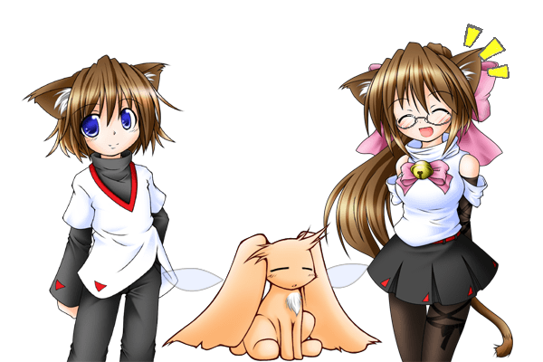
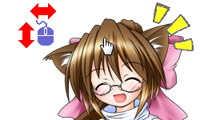
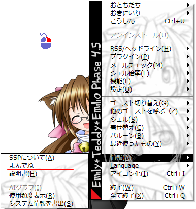

基本的な使い方：ゴーストとあそぶ
ゴーストが何をするのか、何ができるのかは、基本的にすべてゴースト次第です。
といっても最初は何をして良いのかわからないと思いますので、ここでは多くのゴーストに共通する機能をいくつか紹介しましょう。
しゃべる
起動してそのままにしておけば、ほとんどのゴーストは勝手にしゃべります。
ゴーストの基本形は「本体」と「相方」の二人組なので、漫才をするといったほうが正しいかもしれません。

カーソルでさわる
ただ眺めるだけでも楽しめますが、カーソルを使って、撫でたり・突いたり・引っぱったり・叩いたりすれば、いろいろと反応してくれるはずです。
どういう反応をするか、いろいろ試してみましょう。
ただしあくまでも、さわる事ができる場所や反応は、ゴーストや、時にはシェルによっても違います。
ここで紹介しきれない操作もあります。それがゴーストの多様な「個性」を形成しているわけです。

カーソル移動
キャラクターの特定の箇所の上で、カーソルを上下左右に動かすと、触る・撫でるといったアクションになります。
例えば多くのゴーストは、頭付近でカーソルを動かすと、なでることができます。
（反応が鈍いゴーストもありますが、個性ですから）

ドラッグ
キャラクターやバルーン（吹き出し）はドラッグで移動できます（相方も）。
相方と重ねると文句をいうキャラクターも……

ホイール
マウスホイールをまわすことで、例えば引っぱる・捲るなどといったアクションになるでしょう。
ただし、比較的最近できた機能な事もあって、喋る頻度を切り替えるなど、ゴーストごとや場所ごとで解釈の幅は広いです。

ダブルクリック
ダブルクリックすると突く・叩く・掴むといったアクションになります。
場所によっては痛がったりすることもありそうです。

またほとんどのゴーストは、なんでもない場所（カーソルが変わらない場所）をダブルクリックされた場合に、バルーン内に自分のメニューを出します。
このメニューについては、この次に説明します。
メニュー

ほとんどのゴーストは、何もない場所をダブルクリックすると、メニューを開きます。
このメニューで、ゴースト独自の機能を実行したり、設定したりできます。
話を聞く
なにか喋ってもらいます。
ゴースト「Emily/Phase4.5」では、この項目は「なんか話して」という名前です。
話しかける
単語を入力するボックスが開き、簡単な単語で話しかける事ができます。
あまり難しい事はわからないかもしれませんが、挨拶くらいはしてくれるでしょう。
ゴースト「Emily/Phase4.5」ではこの項目はありません。

しゃべり頻度
どれくらい頻繁に喋るかを、設定します。
ゴースト「Emily/Phase4.5」では、この項目は「Emilyにおねがい」を押すと出てきます。
キー入力
ゴーストにフォーカスをあててから（一度クリックして最前面に表示してから）特定のキーを押すと、反応がある場合もあります。
特定の機能のショートカットのような役割を果たすことが多いです。
例えばゴースト「Emily/Phase4.5」では、tキーを押すと、すぐにしゃべり始めます。
メニューから「なんか話して」を選ぶより簡単かもしれません。
キー入力は、入力モードが半角じゃないと受け付けない場合が多いです。
うまく行かない場合は全角モードになっていないか確認してみてください。
ゴースト特有の操作
はじめは、これまでに紹介した操作を色々試してみてください。
しかしこのページの最初でも言った通り、ゴーストによって何が出来るかはバラバラです。
ここに書かれているとおりの事ができないゴーストもいれば、もっと色々な事ができるゴーストもたくさんいます。
ゴースト特有の操作については、ゴーストのreadmeに書いてあるかもしれないので、読んでみましょう。
なおメニューの項目名はゴーストによって異なる場合があります（詳細は「右クリックメニュー」のページ）。
